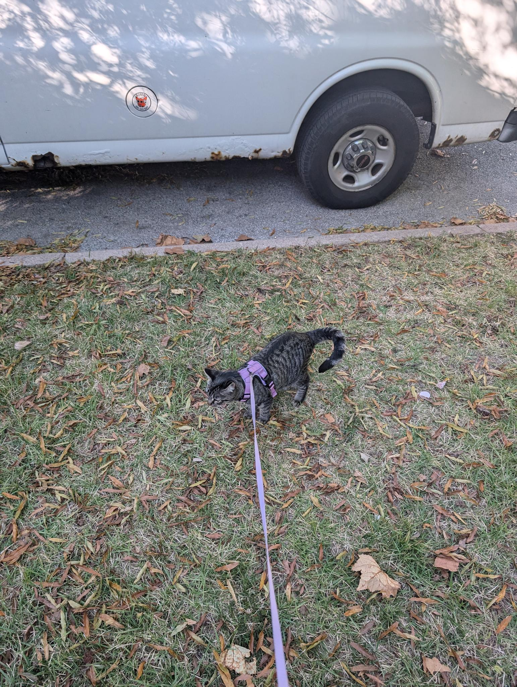

Augustin Scanlon
Email: a.j.scanlon@wustl.edu
Hometown: San Diego, CA
About Me
I am a student at Washington University in St. Louis, pursuing a B.Sc. in Computer Science and an M.Sc. in Computer Engineering. My areas of interest are FPGA programming, system security, and rapid prototyping.
Education
-
Washington University in St. Louis, M.Sc. Candidate in Computer Engineering, B.Sc. in Computer Science (Sept 2021 – Dec 2024)
- Relevant Coursework: Systems Security, Reverse Engineering, FPGA Development, Parallel Computing.
- Dean’s List: Fall 2021.
-
Bates College, B.A. in Philosophy (Sept 2018 – June 2021)
- Thesis on Kant’s Categorical Imperatives.
Experience
-
Project Engineering Intern, Largo Concrete (June 2023 – Aug 2023)
- Coordinated high-rise construction projects, supervised concrete pours, and developed software tools to enhance project management.
-
Research Assistant, Chamberlain Lab (Sept 2021 – Dec 2021)
- Worked on NASA’s Advanced Particle-astrophysics Telescope Project, optimizing FPGA performance for gamma-ray detection.
Skills
- Programming: Python, Java, C, C++, HTML, CSS, JavaScript, MATLAB, VHDL, Assembly.
- Tools: Xilinx Development Environment, Revu Bluebeam.
- Networking: Network Performance Modeling, Stochastic Processes, Traffic Analysis.
Photo
I have a cat. Her name is Cherry. She loves taking walks and gets very loud if I am not paying attention to her. See Cherry below:
